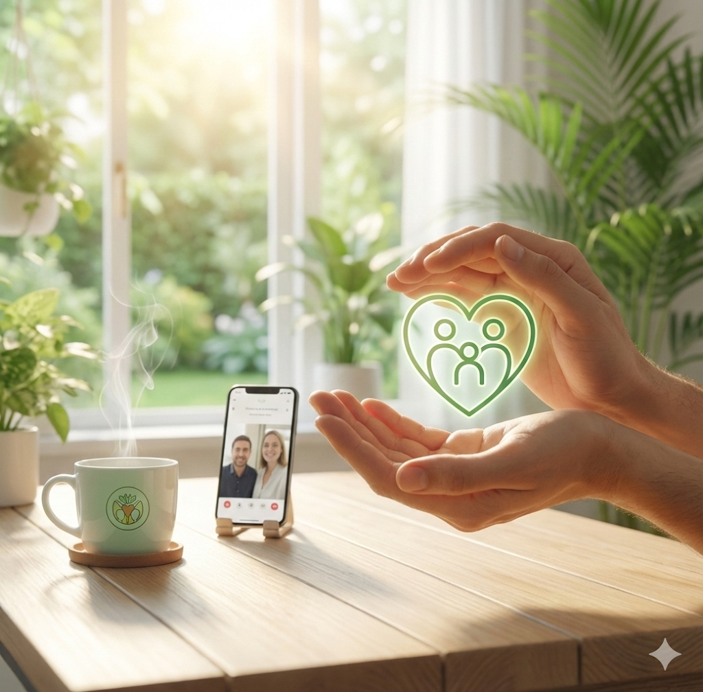

Nuestra misión
Senti2 nace para facilitar un vínculo auténtico entre pacientes y psicólogos, eliminando barreras y ofreciendo un espacio seguro para el bienestar emocional.
Proporcionamos herramientas intuitivas para un seguimiento continuo y terapias personalizadas, guiando a las personas usuarias hacia una vida más plena.
